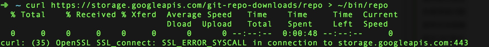
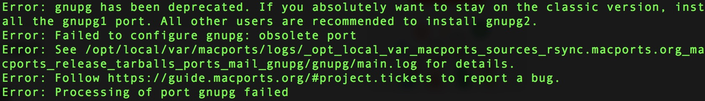

背景
以前在公司电脑上用虚拟机编译过6.0的Android，今年年中新入手Mac之后原本想在自己电脑上重新编译一下的，因为懒而且要分出本来就一大部分内存空间来就一直拖着，但后来公司电脑实在是卡，所以终于决定重新编译一次8.0：网上有很多教程也有好几种方式。
首先我的环境是：
- mac 10.13.2
- xCode 9.2
- jdk1.8
- 加科学上网
主要的步骤和大部分的问题都可以通过以下文章解决：
Mac 下载 编译 debug Android 源码
mac 10.13 编译 Android源码
以下是我另外遇到的问题及解决方案：
请注意！！！
请注意！！！
请注意！！！
如果你编译的是全量的8.0源码，不要想着把磁盘分区设为60-70G了，100G都不够，150G勉强够吧。第一次就是在最后编译的过程中，到60%磁盘满了！满了！满了！折腾了这么久功亏一篑，然后重新来过～这是血的教训
解决办法
- 方法一.把分区设的越大越好
- 方法二.修改default.xml，为其中每个project添加一个clone-depth=”1”的属性，请参考文章开头的第一篇文章，只不过文章中提供的python脚本在project存在子标签的情况下无法正常工作所以本人稍作修改并自动输入成xml格式文件，其他操作都是一样的：
1 | #!/usr/bin/env python |
注：（后来补充此方法对于编译8.0需要稍作修改）
方法二适用于不需要切换分支和历史提交（commit）的同学，因为设置了clone-depth=”1”属性，就只会下载最新一层的代码，因此会大大减少需要下载的代码量，原本这个对于我们大多数人来说并没有影响。但是由于8.0在mac 10.13版本编译阶段应该说是必然会出现的一个关于bison的报错：
1 | FAILED: |
log可能有所不同，你只需要看是否有bison字眼就可以了，下面这是我觉得比较有道理的一个分析：
This was still the case for Jan 4 master checkout. make clean and make did fail.Applying the bison fix described below fixed it. (mm bison and copy it)
大概意思是/Volumes/AOSP/prebuilts/misc/darwin-x86/bison/目录下缺少bison文件，然而这个bison文件在另一个文件夹的之前版本中。我们采用方法二中下载的源码没有办法切换？卧槽！！！！当时第一反应懵逼了，难道还要从新开始，可是分区大小不够，难道要删除分区重新创建从repo init开始～？不甘心，所以就开始找办法解决：
- 实践1:不就是缺少了一个bison文件么，我去找一个不就得了，然后各种下载和用本地bison替换，最后全部以相同报错结束～
- 实践2:就在我要放弃并重新开始的时候，我灵机一动，真的就是当时一瞬间的联想：还记得我们修改的default.xml文件么？既然repo是根据这个文件去sync源码树的，那我把我需要的那个project不设置clone-depth=”1”属性不就好了么？然后在default.xml文件中全局搜索了
external/bison一下，卧槽竟然真的搜到了，然后果断去掉这个project的clone-depth=”1”属性，然后重新执行
1 | repo sync |
然后在按照文章开头的第二篇文章中的方法也就是以下步骤即可解决：1
2
3
4
5
6
7
8
9
10
11
12
13Patch [bison fix](https://android-review.googlesource.com/c/platform/external/bison/+/517740) for High Sierra and build bison:
1. cd /Volumes/AOSP/external/bison
2. git cherry-pick c0c852bd6fe462b148475476d9124fd740eba160
3. mm
Replace prebuilt bison binary with patched binary //替换bison文件
1. cp /Volumes/AOSP/out/host/darwin-x86/bin/bison /Volumes/AOSP/prebuilts/misc/darwin-x86/bison/ // /Volumes/AOSP/替换成你的源码目录
Build //重新编译
1. make -j8 //根据自己的电脑配置 核数*2
如果mm命令无法执行，需要回去执行以下命令
1 | 1. source build/envsetup.sh |
下载源码阶段
1.安装repo
1 | curl https://storage.googleapis.com/git-repo-downloads/repo > ~/bin/repo |
官方推荐的安装方式，但假如你和我一样无法安装成功或者报以下错误：

假如你和我一样科学上网的话遇到这种问题直接复制链接浏览器打开下载到电脑上
https://storage.googleapis.com/git-repo-downloads/repo
然后进入到你保存repo文件的目录下执行以下命令
1 | cp -i repo ~/bin |
不然就使用清华镜像
同时不要忘了给repo执行权限
2.repo: command not found
解决方法：执行
1 | echo 'export PATH=$PATH:$HOME/bin' >> ~/.bashrc |
3.下载源码，即使已经科学上网了最后还是没能使用google的官方资源，最后使用了清华镜像，具体可参考官方说明：清华镜像
编译阶段
先介绍以下背景 本文使用的是macports，也说不上来macports和homebrew哪个好哈哈。
1.安装gnupg失败：
我在参考文章开始阶段的文章下载安装需要的依赖时候在安装gnupg失败了，报错如下：

提示信息很明确都不要搜索，但总有些心急的同学见到英文第一反应就是复制搜索，所以我还是说下解决方案，报错信息提示gnupg被弃用了，建议安装gnupg2。所以只需打开终端输入如下命令：
1 | POSIXLY_CORRECT=1 sudo port install gnupg2 |
2.缺少mac sdk包，根据提示找到相应版本，下载到本地https://github.com/phracker/MacOSX-SDKs/releases解压然后复制到以下目录1
/Applications/Xcode.app/Contents/Developer/Platforms/MacOSX.platform/Developer/SDKs
如果直接打开无法解压可通过tar命令解压：
1 | tar -Jxvf fileName |
3.好几次报错都有 xz: command not found:
xz就是一个解压工具包，缺啥咱就装啥，下载压缩包，然后解压加上安装三板斧：1
2
3 ./configure
make
make install
安装xz
其他的就是耐心等待了～
拓展
今天有人给我说用ln命令去创建一个软链啊，what？软链？那岂不是还有硬链？有啥区别呢？然后发现很好的一片文章，看得似懂非懂，先记录下来再说，在此之前先奉上文章链接
理解 Linux 的硬链接与软链接
然后发现一个比较有意思的点：
文件名与文件索引的真实要素inode与域名和ip之间的关系非常类似。